Overview
To account for cash held in
escrow
properly,let's first trace the path the cash takes through your
business. A third party holds money in an account on behalf of two other
parties while they complete a transaction. The neutral party may hold
assets, such as cash, securities, or funds, until both the buyers and
sellers have fulfilled their responsibilities.
The escrow account manager may be a lender, escrow company, escrow
agent, or mortgage agency. In real estate transactions, the escrow agent
or company may be the same as the title company.
Now that we have the path, let us map your Chart of Accounts using
QuickBooks Online (QBO).
What you'll learn...
- Setup the Escrow Account in QBO
- Add the Purchased Asset to your Books
- Add Escrow Payments and Track your Asset
- Business Activity while Managing Escrow
Setup the Escrow Account in QBO
Is the escrow account an
Asset? Or is it a
Liability?
You close on a single family with $3,500 of escrow. This covers $291.66
per month of property taxes and insurance. Escrow Accounts may either be
cash that the business expects to receive or cash the business must pay
out. In this case, the escrow is a prepayment for expenses and is an
asset. The escrow is for the next 12 months and is a current asset.
To set up an escrow account in QBO, you can create a Bank or Other
Current Assets. They have the same effect on your Income Statement and
Balance Sheet. It comes down to personal preference. Let us use the
current asset account.
I opened a session using QBO's Sample Company. Use it to evaluate new
bookkeeping techniques. Head over to the left side menu and select Chart
of Accounts from the Transaction center.

To begin the escrow account setup, select the New button to create the
new account.
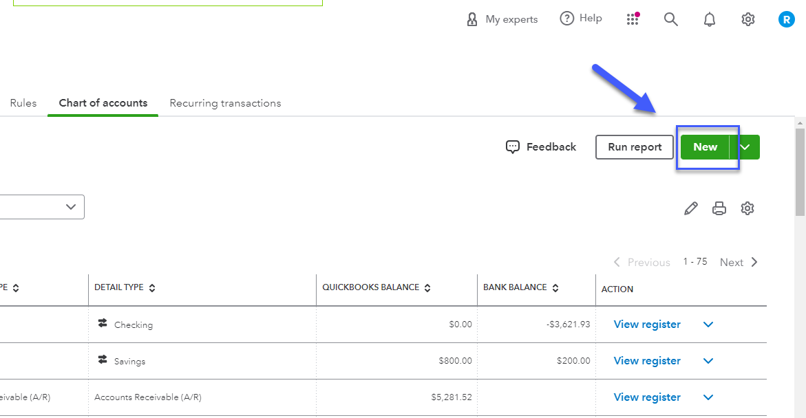
To create an Other Current Assets account, select the Asset parent
account, and in the Save account under, select Other Current Assets. The
Tax form section, also called detail type, determines how the transaction will be
applied to your
Schedule C tax form when set up as a sole proprietor in QBO. It does not change anything else other than tax account mapping.
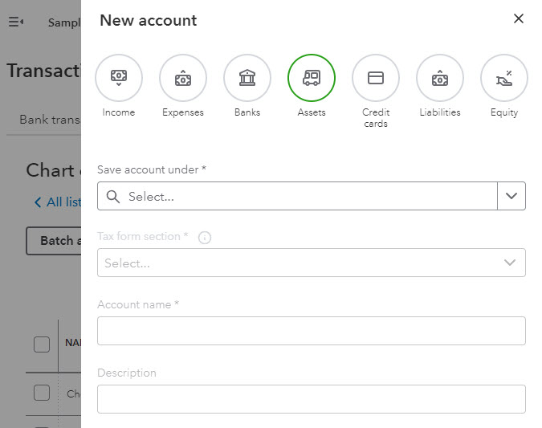
Select the best description for your escrow account. Investment -
Mortgage/Real Estate Loans and Prepaid Expenses both are suitable
options. I am not sure of the detail type, so I will just choose
Investment - Mortgage/Real Estate Loans for now. The escrow is a current
asset so I will name the account Current Escrow.
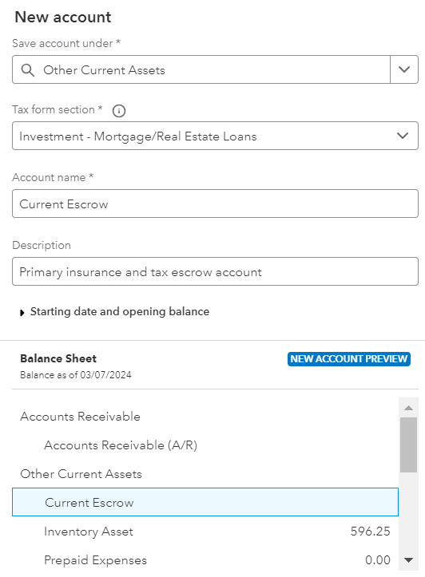
Add your Purchased Asset to your Books
Find the +New button on the top right and select journal entry.
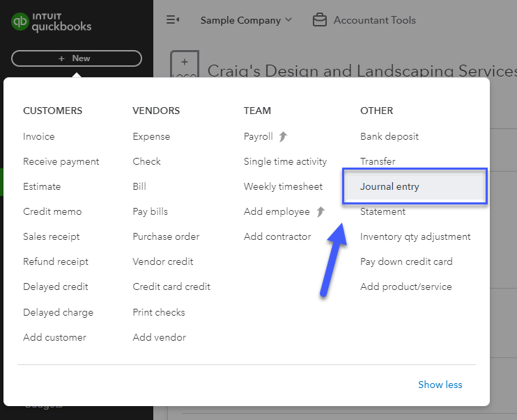
Create a new journal entry and add your new asset to QBO.
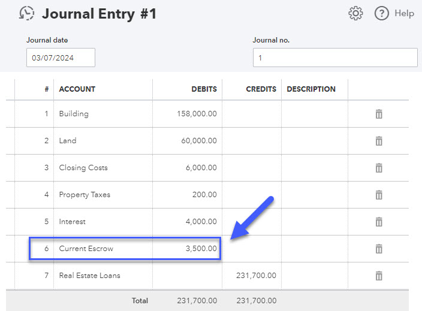
Going back to the Chart of Accounts, the Current Escrow account now has
a $3,500 balance mathcing Journal Entry #1.
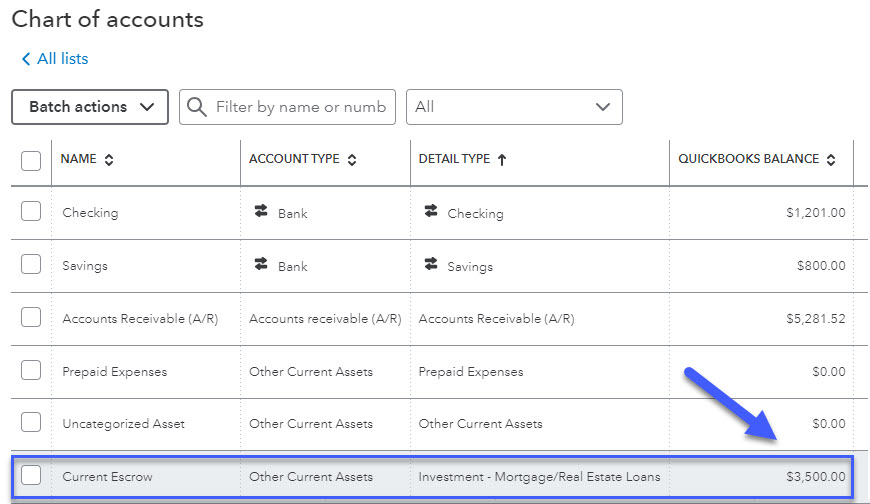
Add Escrow Payments to Track your Asset
As you use your escrow, create an expense to match the HUD. The prepaid
expense asset is now an actual expense reducing your tax liability.
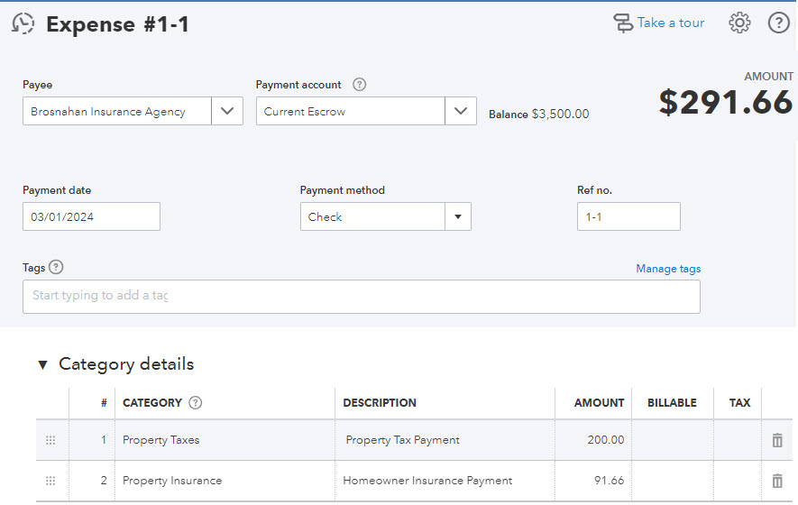
What's actually happening here? The insurance and rent expense accounts
are going up. Your available escrow is going down by the amount of the
expense. The escrow balance is now $3,208.34.
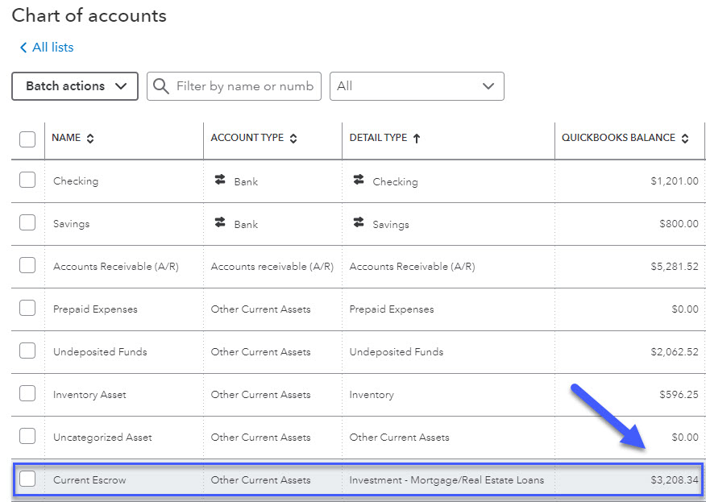
If you enter the account register to see all the transactions, you will
find the initial journal entry to log the asset and the expense to log
the escrow payment.
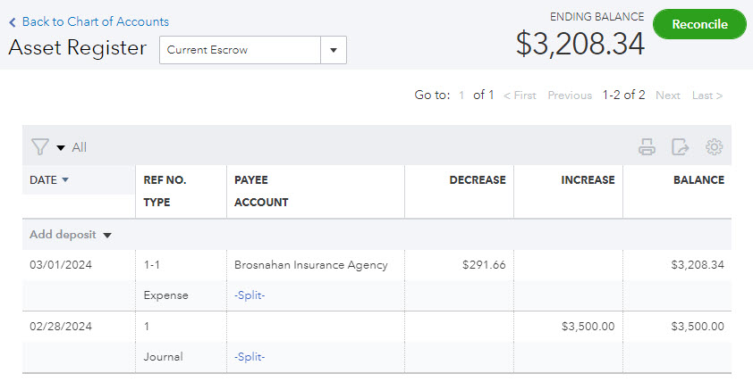
As you add more assets to your books, you may need to update the escrow
account information. Create a system for adding and updating accounts,
including naming conventions and tax treatment.
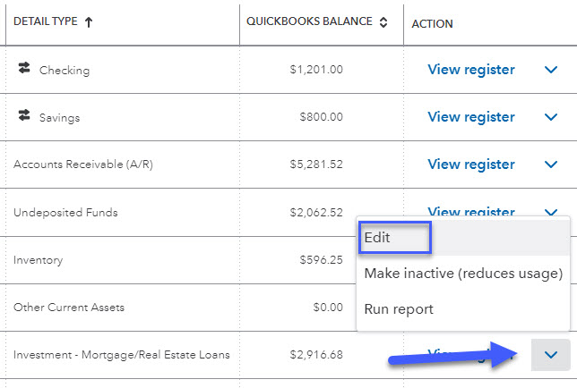
In this case, I thought it would be better to change the Account name to
something more descriptive by replacing Current with Insurance & Tax. I
also decided to select Prepaid Expense as the detail type since it is
more accurate.
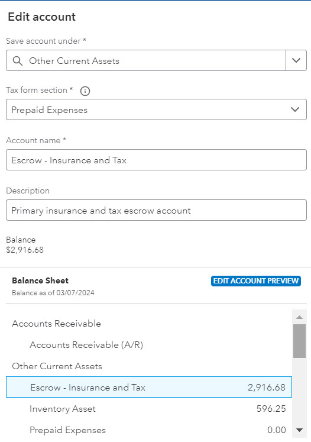
Add another payment for the following month, keeping the reference
numbering consistent. It makes asset reporting easier.
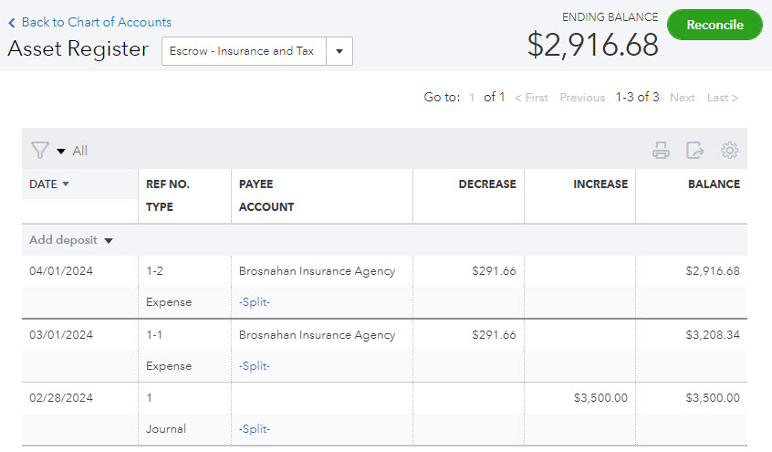
Business Activity while Managing Escrow
Bookkeeping is all about mapping your physical business activity to the
digital world. The transaction is happening between the lender, lessee,
and leaser. The escrow and the other related accounts map the physical
activity to QBO.
Escrow is restricted cash
Escrow is one form of restricted cash. Any cash reserved for a specific
purpose qualifies as restricted assets. For example, if you set aside
revenue to pay dividends to shareholders or expect to lose a lawsuit and
reserve cash to pay the judgment.
Although escrow is part of your financials as a cash on hand asset, and
available to you, you are not supposed to use it for anything other than
its intended purpose.
 Horacio Bermudez
Horacio Bermudez